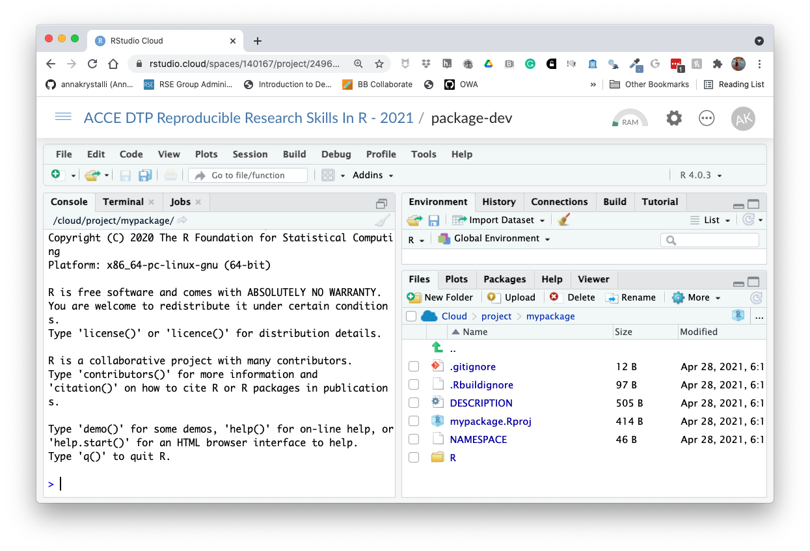

Packaging functionality
R Package Structure
Used to share functionality with the R community
Useful conventions
Useful software development tools
Easy publishing through GitHub
R Package conventions:
metadata: in the
DESCRIPTIONfilefunctions in
.Rscripts in theR/foldertests in the
tests/folderDocumentation:
- functions using Roxygen notation
- workflows using
.Rmddocuments in thevignettes/folder
Software Engineering approach
Following conventions allows us to make use of automated tools for:
Checking and testing code
Producing documentation for code and workflows
Publishing, distributing and citing code
Anatomy of an R package
Let’s use pkgreviewr, a package I authored to help automate some aspects of the rOpenSci review process, as an example to examine some elements of what makes a package:
DESCRIPTION file
Capture metadata around the package - Functionality description - Creators - License
Package: pkgreviewr
Type: Package
Title: rOpenSci package review project template
Version: 0.1.1
Authors@R: c(person("Anna", "Krystalli", email = "annakrystalli@googlemail.com",
role = c("aut", "cre")),
person("Maëlle", "Salmon", email = "maelle.salmon@yahoo.se", role = "aut"))
Description: Creates files and collects materials necessary to complete an rOpenSci package review.
Review files are prepopulated with review package specific metadata. Review package source code is
also cloned for local testing and inspection.
License: GPL-3 + file LICENSE
URL: https://github.com/ropenscilabs/pkgreviewr
BugReports: https://github.com/ropenscilabs/pkgreviewr/issues
Encoding: UTF-8
LazyData: true
Imports:
devtools,
git2r (>= 0.23.0),
usethis (>= 1.2.0),
here,
reprex,
gh,
base64enc,
whoami,
magrittr,
covr,
goodpractice,
assertthat,
httr,
rstudioapi,
clipr,
clisymbols,
crayon,
dplyr,
glue,
fs,
urltools,
shiny
Suggests:
testthat,
mockery,
knitr,
rmarkdown
RoxygenNote: 6.1.1
Remotes:
ropensci/git2r
VignetteBuilder: knitr
Roxygen: list(markdown = TRUE)
citation
citation("pkgreviewr")##
## To cite package 'pkgreviewr' in publications use:
##
## Anna Krystalli and Maëlle Salmon (2021). pkgreviewr: rOpenSci package
## review project template. R package version 0.2.0.
## https://github.com/ropenscilabs/pkgreviewr
##
## A BibTeX entry for LaTeX users is
##
## @Manual{,
## title = {pkgreviewr: rOpenSci package review project template},
## author = {Anna Krystalli and Maëlle Salmon},
## year = {2021},
## note = {R package version 0.2.0},
## url = {https://github.com/ropenscilabs/pkgreviewr},
## }Dependency management
It’s the job of the DESCRIPTION to list the packages that your package needs to work.
Imports:
devtools,
git2r (>= 0.23.0),
usethis (>= 1.2.0),
here,
reprex,
gh,
base64enc,
whoami,
magrittr,
covr,
goodpractice,
assertthat,
httr,
rstudioapi,
clipr,
clisymbols,
crayon,
dplyr,
glue,
fs,
urltools,
shinyImports are necessary dependencies for the functions in your package to work
Suggests:
testthat,
mockery,
knitr,
rmarkdownSuggests are dependencies that are not necessary for the functions in your package but might be neccessary to run all the vignettes or tests in your package
R/
- Keep all functions in R scripts in
R/folder
.
├── github.R
├── pkgreview.R
├── pkgreviewr-package.R
├── render-templates.R
├── rmd-utils.R
├── style.R
└── utils.R
0 directories, 7 filesexample function script
Create a new function .R file in the R/ folder
library(usethis)
use_r("add")R
└── add.R
0 directories, 1 filesDocument functions with Roxygen
- Document functions with Roxygen notation
- Automatically create help files on build
#' Add together two numbers.
#'
#' @param x A number.
#' @param y A number.
#' @return The sum of x and y.
#' @examples
#' add(1, 1)
#' add(10, 1)
add <- function(x, y) {
x + y
}tests/
Tests provide confidence in what the code is doing.
Contents of pkgreviewr test folder
.
├── testthat
│ ├── setup.R
│ ├── test-create-pkgreview.R
│ ├── test-gh-calls.R
│ ├── test-render-templates.R
│ └── test-setup.R
└── testthat.R
1 directory, 6 filesExample test
use_test("add")tests
├── testthat
│ ├── test-add.R
└── testthat.Rtest_that("add works", {
expect_equal(add(2, 2), 4)
})The R package structure can help with providing a logical organisation of files, by providing a set of standard locations for certain types of files.
To work with packages in RStudio we use the Build pane, which includes a variety of tools for building, documenting and testing packages. This will appear if Rstudio recognises the project as an R package.


💻Create your first package
Let’s go ahead and create our first package!
We can do that as we would any project, but this time we would select R package instead of New Project and call our new package mypackage.
Otherwise, we can use function usethis::create_package("mypackage") to create a new package. The argument we provide is the path to here we want our new package created, the last element being the package name. Note that there are restrictions on what characters can be used in a package name.
To do this in Rstudio Cloud (which is a bit fiddlier) we will create a general project in which we will create our package project. In general, creating a project within a project is bad practice and you should avoid this when working locally, but given the more restrictive nature of working in Rstudio cloud, we will break this general best practice rule.
Copy package-dev Project
In our shared space click on the copy button next to the package-dev Project.

Click on Save a permanent copy. You now have a personal copy of the project.
Create package
Create your package development project within the ACCE-projects project:
usethis::create_package("mypackage")Your new project should have the following structure. The build pane should also be visible.
.
├── DESCRIPTION
├── NAMESPACE
├── R
└── mypackage.Rprojknitr::include_graphics("assets/r_package_rstudio-cloud.png")
Initialise git and commit files.
Let’s also initialise our project as a git repository and commit our initial files. We’ll need to configure git again as this is a new Rstudio cloud project.
# configure git
use_git_config(user.name = "Jane",
user.email = "jane@example.org")
# intialise git and commit
usethis::use_git()🚦 Functions in the R/ dir
Create function script and first function
Let’s create a script and write our first function:
usethis::use_r("hello")✓ Setting active project to '/cloud/project/mypackage'
• Modify 'R/hello.R'
• Call `use_test()` to create a matching test fileIn the opened hello.R script, let’s write our first function:
hello <- function() {
print("Hello, world!")
}It’s a function that takes no arguments and prints Hello, world! to the console when called.
Install package.
You can install a package locally from it’s source code with function devtools::install()
devtools::install()✓ checking for file ‘/cloud/project/mypackage/DESCRIPTION’ ...
─ preparing ‘mypackage’:
✓ checking DESCRIPTION meta-information ...
─ checking for LF line-endings in source and make files and shell scripts
─ checking for empty or unneeded directories
─ building ‘mypackage_0.0.0.9000.tar.gz’
Running /opt/R/4.0.3/lib/R/bin/R CMD INSTALL \
/tmp/RtmpVciSpz/mypackage_0.0.0.9000.tar.gz \
--install-tests
* installing to library ‘/home/rstudio-user/R/x86_64-pc-linux-gnu-library/4.0’
* installing *source* package ‘mypackage’ ...
** using staged installation
** R
** byte-compile and prepare package for lazy loading
** help
No man pages found in package ‘mypackage’
*** installing help indices
** building package indices
** testing if installed package can be loaded from temporary location
** testing if installed package can be loaded from final location
** testing if installed package keeps a record of temporary installation path
* DONE (mypackage)You can now load it like any other package…
library("mypackage")Let’s try using our function
hello()Oooops? Our function doesn’t seem to be available! 🤔
Let’s try something else:
mypackage:::hello()## [1] "Hello, world!"So what’s happened here? Although the package contains our function, we have not exported to make available to a user. Currently it is contained as an internal function. Hence we can access it with the notation for internal functions (:::) but not directly when we load the package!
To export the function, we will need to add a tag to tell R to do so using a special documentation notation called Roxygen!
🚦 Roxygen documentation
Roxygen2 allows you to write specially-structured comments preceeding each function definition to document:
- the inputs and outputs
- a description of what it does
- an example of how to use it
- whether to export the function
These are processed automatically to produce .Rd help files for your functions and control which functions are exported to the package NAMESPACE.
Let’s document our example function.
Insert Roxygen skeleton
You can insert a Roxygen skeleton by placing the curson with a function and clicking:
Code > Insert Roxygen Skeleton
#' Title
#'
#' @return
#' @export
#'
#' @examples
hello <- function() {
print("Hello, world!")
}Roxygen basics
roxygennotation indicated by beginning line with#'.First line will be the title for the function.
After title, include a blank
#'line and then write a longer description.@param argument_namedescription of the argument.@returndescription of what the function returns.@exporttellsRoxygen2to add this function to theNAMESPACEfile, so that it will be accessible to users.@examplesallows to include example of how to use a function
Complete Roxygen documentation
#' Hello World!
#'
#' Print hello greeting
#' @return prints hello greeting to console
#' @export
#'
#' @examples
#' hello()
hello <- function() {
print("Hello, world!")
}Autogenerate documentation
Use function devtools::document() to create documentation. This re-creates a hello.Rd helpfile in the man/ folder and populates the NAMESPACE with our functions
devtools::document()Click Install and Restart to re-install the package and make the documentation available.


You can configure your build tools in the Global Options (accessed through the build panel under More > Configure Build Tools) to automatically build documentation every time you click Install & Rebuild
 Now clicking Install & Restart will also build your docs in the
Now clicking Install & Restart will also build your docs in the man/ folder for you.
🚦 Personalise function
Let’s go a step further and customise our function so that the greeting is from ourselves!
#' Hello World!
#'
#' Print hello greeting
#' @return prints hello greeting to console from me
#' @export
#'
#' @examples
#' hello()
hello <- function() {
print("Hello, world from Anna")
}Add some fun!
Programming is most useful for having fun. So let’s make our function extra fun!
We’ll use package cowsay
install.packages("cowsay")which has a single function say, which does this…
cowsay::say("Say whaaaaaat?", by = "shark")##
## --------------
## Say whaaaaaat?
## --------------
## \
## \
## \
## /""-._
## . '-,
## : '',
## ; * '.
## ' * () '.
## \ \
## \ _.---.._ '.
## : .' _.--''-'' \ ,'
## .._ '/.' . ;
## ; `-. , \'
## ; `, ; ._\
## ; \ _,-' ''--._
## : \_,-' '-._
## \ ,-' . '-._
## .' __.-''; \...,__ '.
## .' _,-' \ \ ''--.,__ '\
## / _,--' ; \ ; \^.}
## ;_,-' ) \ )\ ) ;
## / \/ \_.,-' ;
## / ;
## ,-' _,-'''-. ,-., ; PFA
## ,-' _.-' \ / |/'-._...--'
## :--`` )/
## '
## 😜
So let’s create a function that randomly chooses one of the animals available in cowsay to deliver the greeting, and also allow the user to customise who the recipient of the greeting is
#' Hello World!
#'
#' Print personalised hello greeting from me.
#'
#' @param name character string. Your name!
#'
#' @return prints hello greeting to console
#' @export
#'
#' @examples
#' hello()
#' hello("Lucy Elen")
hello <- function(name = NULL) {
# create greeting
if(is.null(name)){name <- "world"}
greeting <- paste("Hello", name, "from Anna!")
# randomly sample an animal
animal_names <- names(cowsay::animals)
i <- sample(1:length(animal_names), 1)
cowsay::say(greeting, animal_names[i])
}Document, Install and restart to load our changes
hello("y'all")##
## -----
## Hello y'all from Anna!
## ------
## \
## \
## \
## ,
## _,,)\.~,,._
## (()` ``)\))),,_
## | \ ''((\)))),,_ ____
## |6` | ''((\())) "-.____.-" `-.-,
## | .'\ ''))))' \)))
## | | `. '' ((((
## \, _) \/ |))))
## `' | (((((
## \ | ))))))
## `| | ,\ /((((((
## | / `-.______.< \ | )))))
## | | / `. \ \ ((((
## | / \ | `.\ | (((
## \ | | | )| | ))
## | | | | || | ' [endless.horse]
## | | | | || |Let’s commit our current files and changes.
🚦 Check package integrity
An important part of the package development process is R CMD check. R CMD check automatically checks your code and can automatically detects many common problems that we’d otherwise discover the hard way.
To check our package, we can:
use
devtools::check()press Ctrl/Cmd + Shift + E
click on the ✅Check tab in the Build panel.
This:
Ensures that the documentation is up-to-date by running
devtools::document().Bundles the package before checking it.
More info on checks here.
Both these run R CMD check which return three types of messages:
ERRORs: Severe problems that you should fix regardless of whether or not you’re submitting to CRAN.
WARNINGs: Likely problems that you must fix if you’re planning to submit to CRAN (and a good idea to look into even if you’re not).
NOTEs: Mild problems. If you are submitting to CRAN, you should strive to eliminate all NOTEs, even if they are false positives.
Let’s Check our package:
Click on the Check button (📋 ✅)
── R CMD check results ──────────────────────────────────── mypackage 0.1.0 ────
Duration: 8.4s
❯ checking DESCRIPTION meta-information ... WARNING
Non-standard license specification:
What license is it under?
Standardizable: FALSE
❯ checking dependencies in R code ... WARNING
'::' or ':::' import not declared from: ‘cowsay’
0 errors ✔ | 2 warnings ✖ | 0 notes ✔
Error: R CMD check found WARNINGs
Execution halted
Exited with status 1.Aha, so our checks have thrown up some warnings! First, it’s telling us we haven’t added a LICENSE. It’s also telling us that we have a dependency (import) from package cowsay which we haven’t documented in the DESCRIPTION file. usethis to the rescue!
🚦 Add dependencies
Add cowsay as a dependency.
usethis::use_package("cowsay")✔ Setting active project to '/Users/Anna/Desktop/mypackage'
✔ Adding 'cowsay' to Imports field in DESCRIPTION
● Refer to functions with `cowsay::fun()`Add License
usethis::use_mit_license("Anna Krystalli")
Check again…All should be good!
── R CMD check results ──────────────────────────────────── mypackage 0.1.0 ────
Duration: 9.3s
0 errors ✔ | 0 warnings ✔ | 0 notes ✔
R CMD check succeededLet’s commit our current files and changes.
🚦 Add Test
Testing is a vital part of package development. It ensures that our code does what you want it to do.
Once you’re set up with a testing framework, the workflow is simple:
Modify your code or tests.
Test your package with Ctrl/Cmd + Shift + T or
devtools::test().Repeat until all tests pass.
create test file
To create a new test file (and the testing framework if required), use function
usethis::use_test(). It’s good practice to name the test files after the .R files containing the functions being tested.
use_test("hello")✔ Setting active project to '/Users/Anna/Documents/workflows/workshops/materials/mypackage'
✔ Adding 'testthat' to Suggests field in DESCRIPTION
✔ Creating 'tests/testthat/'
✔ Writing 'tests/testthat.R'
✔ Writing 'tests/testthat/test-hello.R'
● Modify 'tests/testthat/test-hello.R'This just created the following folders and files
tests
├── testthat
│ └── test-hello.R
└── testthat.R
1 directory, 2 filesIt also added testthat to the suggested packages in the DESCRIPTION file.
Suggests:
testthatThat’s because you don’t need test that to run the functions in mypackage, but you do
if you want to run the tests.
When the tests are run (either through running devtools::test(), clicking on More > Test Package in the Build panel or Cmd/Ctrl + Shift + T), the code in each test script in directory testthat is run.
test-hello.R
Let’s load the library so we can explore the testthat testing framework
library(testthat)test_that("multiplication works", {
expect_equal(2 * 2, 4)
})## Test passed 😀If the test doesn’t pass it throws an error
test_that("multiplication works", {
expect_equal(2 * 2, 5)
})## ── Failure (<text>:2:3): multiplication works ──────────────────────────────────
## 2 * 2 not equal to 5.
## 1/1 mismatches
## [1] 4 - 5 == -1Write test
Let’s write a simple test to check that we are getting an expected output type. The first thing to note, looking at the say() documentation is that it takes an argument type which allows us to specify the output we want. It defaults to NULL which means the output of the function is just sent to the console without producing an assignable output.
We can therefore use testthat::expect_null(). We’ll also suppress the printed output of the function so that we don’t pollute our testing logs.
test_that("hello works", {
expect_null(suppressMessages(hello()))
})##
## -----
## Hello world from Anna!
## ------
## \
## \
## ____
## _.' : `._
## .-.'`. ; .'`.-.
## __ / : ___\ ; /___ ; \ __
## ,'_ ""--.:__;".-.";: :".-.":__;.--"" _`,
## :' `.t""--.. '<@.`;_ ',@>` ..--""j.' `;
## `:-.._J '-.-'L__ `-- ' L_..-;'
## "-.__ ; .-" "-. : __.-"
## L ' /.------.\ ' J
## "-. "--" .-"
## __.l"-:_JL_;-";.__
## .-j/'.; ;"""" / .'\"-.
## .' /:`. "-.: .-" .'; `.
## .-" / ; "-. "-..-" .-" : "-.
## .+"-. : : "-.__.-" ;-._ \
## ; \ `.; ; : : "+. ;
## : ; ; ; : ; : \:
## ; : ; : ;: ; :
## : \ ; : ; : ; / ::
## ; ; : ; : ; : ;:
## : : ; : ; : : ; : ;
## ;\ : ; : ; ; ; ;
## : `."-; : ; : ; / ;
## ; -: ; : ; : .-" :
## :\ \ : ; : \.-" :
## ;`. \ ; : ;.'_..-- / ;
## : "-. "-: ; :/." .' :
## \ \ : ;/ __ :
## \ .-`.\ /t-"" ":-+. :
## `. .-" `l __/ /`. : ; ; \ ;
## \ .-" .-"-.-" .' .'j \ / ;/
## \ / .-" /. .'.' ;_:' ;
## :-""-.`./-.' / `.___.'
## \ `t ._ / bug
## "-.t-._:'
## Test passed 🌈Now let’s test our package
devtools::test()Success!
==> devtools::test()
Loading mypackage
Testing mypackage
✔ | OK F W S | Context
✔ | 1 | test-hello
══ Results ════════════════════════════════════════════════════════
OK: 1
Failed: 0
Warnings: 0
Skipped: 0Let’s commit our current files and changes.
🚦 Create README
The final document you will need for your package is a README.
usethis::use_readme_rmd()✔ Writing 'README.Rmd'
✔ Adding '^README\\.Rmd$' to '.Rbuildignore'
● Modify 'README.Rmd'
✔ Writing '.git/hooks/pre-commit'Because it’s an .Rmd but GitHub can only display an md document as it’s landing page, this is a special .Rmd that renders to a markdown document rather than html. The function adds a check to .git to ensure you commit an up to date version on the md when you commit changes to the .Rmd.
Complete the README, including an example. Here’s what mine looks like:
knitr::include_graphics("assets/mypackage-readme.png")Let’s commit our current files and changes.
🚦 Complete package metadata
Let’s head to the DESCRIPTION file and complete the details.
Add a title and description
Complete the title and description fields with appropriate details. If you want to form a paragraph of text, make sure do indent the hanging lines by 4 spaces (one tab). And make sure that your Description field ends in a full-stop.
Add a date
Use today’s date in ISO format, ie 2021-05-07. This will populate a citation entry for us.
Completed DESCRIPTION
The complete DESCRIPTION file should look something like this:
Package: mypackage
Title: Customised greetings from me!
Version: 0.1.0
Authors@R: person("Anna", "Krystalli",
email = "annakrystalli@googlemail.com",
role = c("aut", "cre"))
Description: Prints a customised greeting from myself,
delivered by a friend.
License: MIT + file LICENSE
Encoding: UTF-8
LazyData: true
Roxygen: list(markdown = TRUE)
RoxygenNote: 7.1.1
Imports:
cowsay
Suggests:
testthat (>= 3.0.0)
Config/testthat/edition: 3
URL: https://github.com/annakrystalli/mypackage
BugReports: https://github.com/annakrystalli/mypackage/issues
Date: 2021-05-07Check your package. If all is good, document, install and restart!
Now, check you’re package’s citation:
citation("mypackage")To cite package ‘mypackage’ in publications use:
Anna Krystalli (2021). mypackage: Customised greetings from me!. R
package version 0.1.0.
A BibTeX entry for LaTeX users is
@Manual{,
title = {mypackage: Customised greetings from me!},
author = {Anna Krystalli},
year = {2021},
note = {R package version 0.1.0},
}Let’s commit our current files and changes.
Create GitHub repo and push to GitHub
Now you have everything you need to share your package on GitHub so create a GitHub repository and push our local content up to it.
You will need to set up gitcreds again in this new project!
# configure GitHub PAT credentials
gitcreds::gitcreds_set()
# create GitHub repository and push
usethis::use_github(protocol = "https")Anyone will be able to install it using, eg:
devtools::install_github("annakrystalli/mypackage")Add the link to your package repo in the hackpad. Visit someone else’s package repo, follow the instructions to install, load it and receive a personalised greeting from the author!
Setup Continuous Integration with GitHub Actions
Continuous integration (CI) is the practice of automating the integration of code changes from multiple contributors into a single software project. Automated tools are used to assert the new code’s correctness before integration. In our case this is what are tests are for. And GitHub Actions allows us to do this all within GitHub!
Once the appropriate CI workflow is set up, it will automatically run our tests for us every time we push new code to GitHub or when a new pull request is made. This way we can (try to) ensure we don’t merge new code into our code base that introduces bugs (cause our tests to fail). Obviously, our ability to screen for breaking changes is only as good as our testing framework! But atleast we can get GitHub to run our tests for us!
To run CI workflows through GitHub Actions, we specify the actions or jobs we want the CI system in a .yaml file that lives in .github/workflows/ folder in the root of our package/project. This can be quite complicated for complex projects as you have to effectively specify instructions for GitHub to recreate a computational environment to run the tests in. The .yaml format can also be fiddly, with indents having special meaning. However for a simple projects like ours, there is a usethis functions that can create and appropriate .yaml for us that works right out of the box!
Let’s try it out:
usethis::use_github_action_check_release()✓ Creating '.github/'
✓ Adding '^\\.github$' to '.Rbuildignore'
✓ Adding '*.html' to '.github/.gitignore'
✓ Creating '.github/workflows/'
✓ Writing '.github/workflows/R-CMD-check.yaml'
• Learn more at <https://github.com/r-lib/actions/blob/master/examples/README.md✓ Adding R-CMD-check badge to 'README.Rmd'
• Re-knit 'README.Rmd'This workflow installs the latest release of R on macOS and runs R CMD check via the rcmdcheck package.
# For help debugging build failures open an issue on the RStudio community with the 'github-actions' tag.
# https://community.rstudio.com/new-topic?category=Package%20development&tags=github-actions
on:
push:
branches:
- main
- master
pull_request:
branches:
- main
- master
name: R-CMD-check
jobs:
R-CMD-check:
runs-on: macOS-latest
env:
GITHUB_PAT: ${{ secrets.GITHUB_TOKEN }}
steps:
- uses: actions/checkout@v2
- uses: r-lib/actions/setup-r@v1
- name: Install dependencies
run: |
install.packages(c("remotes", "rcmdcheck"))
remotes::install_deps(dependencies = TRUE)
shell: Rscript {0}
- name: Check
run: |
options(crayon.enabled = TRUE)
rcmdcheck::rcmdcheck(args = "--no-manual", error_on = "error")
shell: Rscript {0}- Re-knit
README.Rmdto include GitHub Actions badge. - Commit the whole
.githubfolder as well asREADME.Rmd&README.md - Push to GitHub
This will activate the R-CMD-CHECK GitHub Actions workflow and begin running it.
To see details and the status of GitHub Actions workflows, click on the Actions tab and select the workflow to view. If our test passes, the run will show as successful ✅ and so will the badge in our README. If there are any problems, error messages will appear in the logs.
🚦 Create documentation site
While the README is a great first step for documenting your package, there is an easy way to create a full website which makes the documentation of each exported function avaliable online and where you could include additional, more detailed vignettes.
You can use package pkgdown to create an online site for your documentation. It effectively recycles the documentation you have already created for your functions, information in your README and DESCRIPTION file and presents it in a standardised website form.
Let’s create such a site for our package.
pkgdown::build_site()══ Building pkgdown site ════════════════════════════════════════════
Reading from: '/Users/Anna/Documents/workflows/dummy/mypackage'
Writing to: '/Users/Anna/Documents/workflows/dummy/mypackage/docs'
── Initialising site ────────────────────────────────────────────────
Copying '../../../../../../Library/Frameworks/R.framework/Versions/3.5/Resources/library/pkgdown/assets/docsearch.css' to 'docsearch.css'
Copying '../../../../../../Library/Frameworks/R.framework/Versions/3.5/Resources/library/pkgdown/assets/docsearch.js' to 'docsearch.js'
Copying '../../../../../../Library/Frameworks/R.framework/Versions/3.5/Resources/library/pkgdown/assets/link.svg' to 'link.svg'
Copying '../../../../../../Library/Frameworks/R.framework/Versions/3.5/Resources/library/pkgdown/assets/pkgdown.css' to 'pkgdown.css'
Copying '../../../../../../Library/Frameworks/R.framework/Versions/3.5/Resources/library/pkgdown/assets/pkgdown.js' to 'pkgdown.js'
── Building home ────────────────────────────────────────────────────
Writing 'authors.html'
Reading 'LICENSE.md'
Writing 'LICENSE.html'
Writing 'LICENSE-text.html'
Reading 'README.Rmd'
Writing 'index.html'
── Building function reference ──────────────────────────────────────
Updating mypackage documentation
Writing NAMESPACE
Loading mypackage
Writing NAMESPACE
Writing 'reference/index.html'
Loading mypackage
Reading 'man/hello.Rd'
Writing 'reference/hello.html'
══ DONE ═════════════════════════════════════════════════════════════
── Previewing site ──────────────────────────────────────────────────This creates html documentation for our package in the docs/ folder and presents you with a preview to the site.
Now, you could push this docs/ folder to GitHub and serve through GitHub Pages, but you would need to rebuild, commit and push these docs anytime there was a change in the package documentation.
Instead what we could do is get our CI system (GitHub Actions) to build our docs for us automatically every time there is a push or pull request to our repository!! So let’s try this approach!
First, let’s tell git to ignore local copies of the docs in our docs/ folder by adding docs/* to our .gitignore file. This way, we can still build and preview our site locally if we want but we won’t commit it to ourmaster or main branch.
Then, we can deploy another GitHub Actions template, provided by usethis that again will work right out the box!
usethis::use_github_action("pkgdown")✓ Setting active project to '/cloud/project/mypackage'
✓ Writing '.github/workflows/pkgdown.yaml'
• Learn more at <https://github.com/r-lib/actions/blob/master/examples/README.md>This creates another file in .github/workflows/ called pkgdown.yaml. The workflow installs the package, building all documentation, installs pkgdown and uses it to build the site. It then commits the build site to a separate gh-pages site.
on:
push:
branches:
- main
- master
name: pkgdown
jobs:
pkgdown:
runs-on: macOS-latest
env:
GITHUB_PAT: ${{ secrets.GITHUB_TOKEN }}
steps:
- uses: actions/checkout@v2
- uses: r-lib/actions/setup-r@v1
- uses: r-lib/actions/setup-pandoc@v1
- name: Query dependencies
run: |
install.packages('remotes')
saveRDS(remotes::dev_package_deps(dependencies = TRUE), ".github/depends.Rds", version = 2)
writeLines(sprintf("R-%i.%i", getRversion()$major, getRversion()$minor), ".github/R-version")
shell: Rscript {0}
- name: Restore R package cache
uses: actions/cache@v2
with:
path: ${{ env.R_LIBS_USER }}
key: ${{ runner.os }}-${{ hashFiles('.github/R-version') }}-1-${{ hashFiles('.github/depends.Rds') }}
restore-keys: ${{ runner.os }}-${{ hashFiles('.github/R-version') }}-1-
- name: Install dependencies
run: |
remotes::install_deps(dependencies = TRUE)
install.packages("pkgdown", type = "binary")
shell: Rscript {0}
- name: Install package
run: R CMD INSTALL .
- name: Deploy package
run: |
git config --local user.email "actions@github.com"
git config --local user.name "GitHub Actions"
Rscript -e 'pkgdown::deploy_to_branch(new_process = FALSE)'Coomit the file and push it up to GitHub to activate. Once the workflow completes successfully, you will find the html for your documentation for you site in a new gh-pages branch!
Enable gh-pages
To serve our new site, we need to enable GitHub Pages and set the source directory to the root of the gh-pages branch. To do so we go to Settings and click on Pages on the navigation bar on the left. Also remember to click on Enforce HTTPS.

Once set, the URL at which your pkdown docs are being served will appear. You can copy that and add it to your repo details.


Check out my complete example here